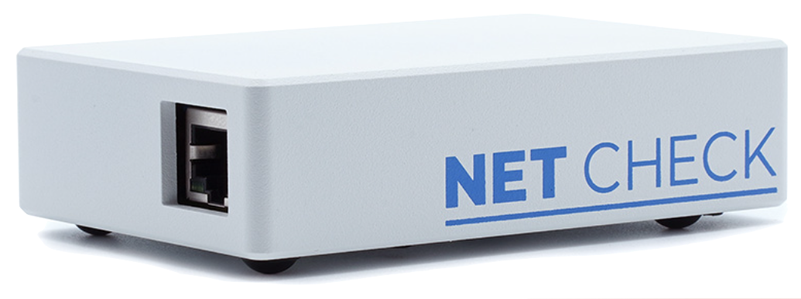

Soy músico desde los 7 años y mi sueño de infancia era ser ingeniero de audio. El problema: la profesión no existía en Colombia… la solución: estudiar ingeniería electrónica y optar luego por una beca para una maestría en audio.
Pero, a veces sencillamente sucede la vida. La necesidad de la música se suplía mientras tocaba en mi banda: Johnie All Stars. Mi trabajo como Ingeniero de Telecomunicaciones era estable, y mi otra pasión, la escritura, cada vez cobraba más protagonismo.
Después de 9 años trabajando en todos los cargos técnicas que pueda tener una red celular, decidí conocer el mundo a través de mi profesión. Me fui entonces a trabajar de consultor a varios países como optimizador de redes móviles, hasta terminar en Berlín, donde luego de un año trabajado en red de acceso, tomé el cargo de gerente de proyectos de crowdsourcing. Algo completamente nuevo que me introdujo al mundo del IT. Y, por último, desarrollé el sistema de benchmarking de internet en casa para Alemania, que consta de 3 productos: una sonda (HW), un speed-test comparativo (SW), y un análisis de datos provenientes de crowdsourcing (entrega de datos con más de 1.5MM de usuarios).
Hoy estoy desarrollando un nuevo proyecto basado en una web-app para la industria del cine y estimado a salir a inicios de 2024.